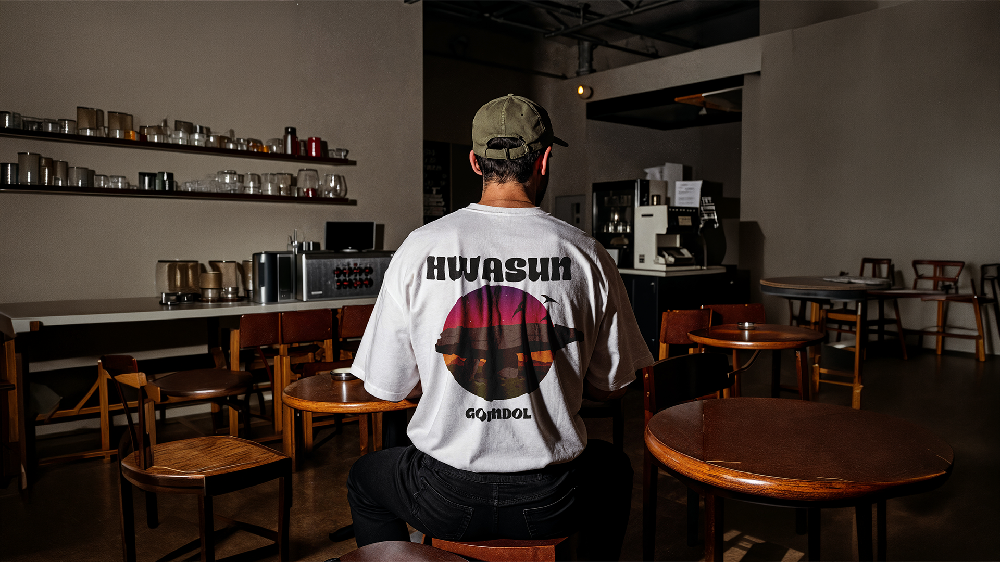
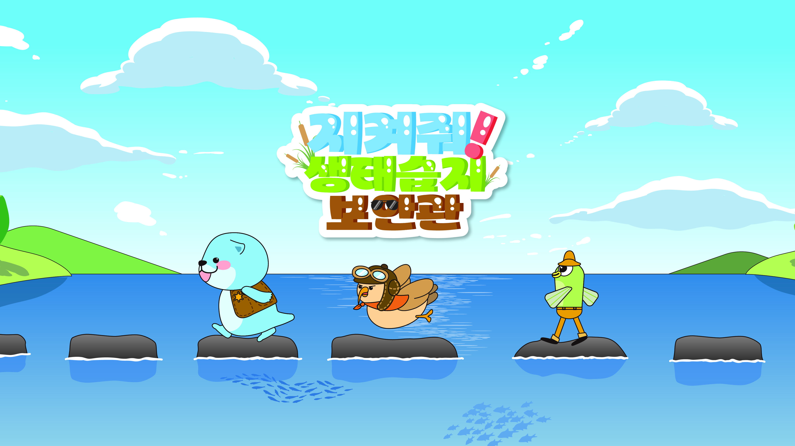
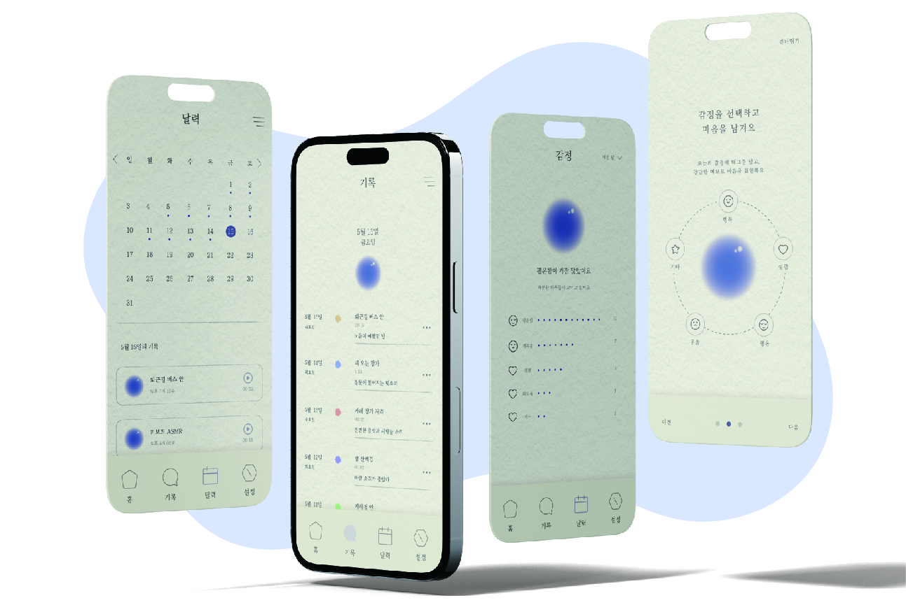

이야기 있는 디자인을 고민합니다.
다양한 시선으로 아이디어를 발견하고,
이를 디자인으로 구체화합니다.
기획부터 시각화까지 고민하며
더 나은 결과를 만들어갑니다.
Tools
ADOBE ILLUSTRATOR
ADOBE PHOTOSHOP
ADOBE INDESIGN
ADOBE PREMIERE PRO
ADOBE AFTER EFFECTS
ADOBE ANIMATE
ADOBE XD
EXCEL
FIGMA
Education
- 2026광주대학교 시각영상디자인학과 졸업
- 2025 광주대학교 시각영상디자인학과 졸업전시 위원장
- 2024 광주대학교 시각영상디자인학과 회장
- 2022광주대학교 시각영상디자인학과 입학
Award
- 2025 <대한민국디자인문화대전> 브랜드 디자인 특선
- 2025 <대한민국디자인문화대전> 캐릭터 디자인 특선
- 2023 <대한민국디자인문화대전> 캐릭터 디자인 특선
Activities
- 2026 2026 제8회 한국스토리디자인협회 전시
- 2026 UI/UX 웹디자인 웹퍼블리셔 프론트엔드 전문가 양성과정 수료
- 2025 광주디자인진흥원 공예 디자인 산업 전문인력사업 전시 및 수료
- 2023 호남권 콘텐츠 기반 장인학교 (2기) 전시 및 수료
Portfolio

WORK 01 - Symbol design
Landmark Series



WORK 02 - Character design
지켜줘! 생태습지보안관


WORK 03 - Brand design
요래요래 밀키트 브랜딩


WORK 03 - Brand design
탄생화 캘린더 디자인



WORK 03 - ui/ux design
사운드 다이어리 ui/ux 디자인

CONTACT
연락처
T : 010 2113 7815
email : daeus1229@naver.com